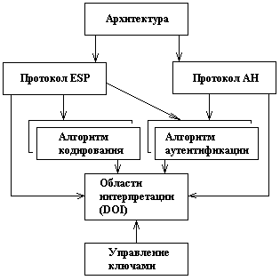

Технология IPsec
Виртуальная частная сеть (VPN) обеспечивает безопасный туннель через
общедоступную и, следовательно, небезопасную сеть. Как известно, VPN чаще всего
используется, предоставляя пользователям доступ к элек-тронной почте,
документам, принтерам и системам с их домашней сети. Безопасность таких данных
критически важна.
IPsec (IP Security) представляет собой набор
протоколов, стандартов и алгоритмов
для защиты трафика по ненадежной сети, такой как Интер-нет. IPseс поддерживается
практически всеми маршрутизаторами и позво-ляет обезопасить данные в сети.
IPsec предоставляет службы безопасности на уровне IP, позволяя си-стеме выбирать
необходимые протоколы безопасности, определять алго-ритмы, используемые для
служб, и вводить любые криптографические ключи, необходимые для предоставления
запрошенных услуг. IPsec может использоваться для защиты одного или нескольких
«путей» между двумя хостами, между двумя шлюзами безопасности или между шлюзом
без-опасности и хостом.
Набор служб безопасности, которые может предоставлять IPsec, включает в себя
контроль доступа, целостность без установления соедине-ния, аутентификацию
источника данных, отказ от повторных пакетов (форма частичной целостности
последовательности), конфиденциальность (шифрование) и ограниченность
конфиденциальности трафика. Поскольку эти услуги предоставляются на уровне IP,
они могут использоваться лю-бым протоколом более высокого уровня, например TCP,
UDP, ICMP, BGP и так далее. Назначение каждой службы безопасности:
- конфиденциальность: предотвращает кражу данных, используя шифрование;
- целостность: гарантирует, что данные не будут изменены или за-менены,
используя алгоритм хэширования;
- аутентификация: подтверждает личность отправки данных хоста, используя
предварительно разделенные ключи или центр серти-фикации (CA);
- anti-replay: предотвращает дублирование зашифрованных паке-тов,
подписывая уникальный порядковый номер.
Архитектура IPsec
IP Security — это группа протоколов, касающихся вопросов шифро-вания,
аутентификации и обеспечения защиты при транспортировке IP-пакетов.
Спецификация IPsec разрабатывается Рабочей группой IP Security Protocol IETF.
Первоначально IPsec включал в себя 3 алгоритмо-независимые базовые спецификации,
опубликованные в качестве RFC-документов "Архитектура безопасности IP",
"Аутентифицирующий заго-ловок (AH)", "Инкапсуляция зашифрованных данных (ESP)".
Кроме этого, существуют несколько алгоритмо-зависимых спецификаций,
использую-щих протоколы MD5, SHA, DES. На рисунке 1 изображена архитектура
IPsec.

Рис.1. Архитектура IPsec
Таблица
| Устройство |
Интерфейс |
IP адрес |
Маска подсети |
Шлюз по умолчанию |
Порт коммутатора |
| R1 |
G0/0 S0/0/0 (DCE) |
209.165.200.1 10.1.1.1 |
255.255.255.0 255.255.255.0 |
Отсутствует Отсутствует |
Отсутствует ASA E0/0 |
| R2 |
S0/0/0 S0/0/1 |
10.1.1.2 10.2.2.2 |
255.255.255.0 255.255.255.0 |
Отсутствует Отсутствует |
Отсутствует Отсутствует |
| R3 |
G0/0 S0/0/1 (DCE) |
172.16.3.1 10.2.2.1 |
255.255.255.0 255.255.255.0 |
Отсутствует Отсутствует |
Отсутствует S2 F0/1 |
| ASA |
VLAN 1 (E0/1) VLAN 2 (E0/0) VLAN 3 (E0/2) |
192.168.1.1 209.165.200.226 192.168.2.1 |
255.255.255.0 255.255.255.0 255.255.255.0 |
Отсутствует Отсутствует Отсутствует |
S2 F0/1 R1 G0/0 S1 F0/1 |
| Server |
NIC |
192.168.2.3 |
255.255.255.0 |
192.168.2.1 |
S1 F0/2 |
| PC-A |
NIC |
192.168.1.3 |
255.255.255.0 |
192.168.1.1 |
S2 F0/2 |
| PC-B |
NIC |
172.16.3.3 |
255.255.255.0 |
172.16.3.1 |
S3 F0/1 |